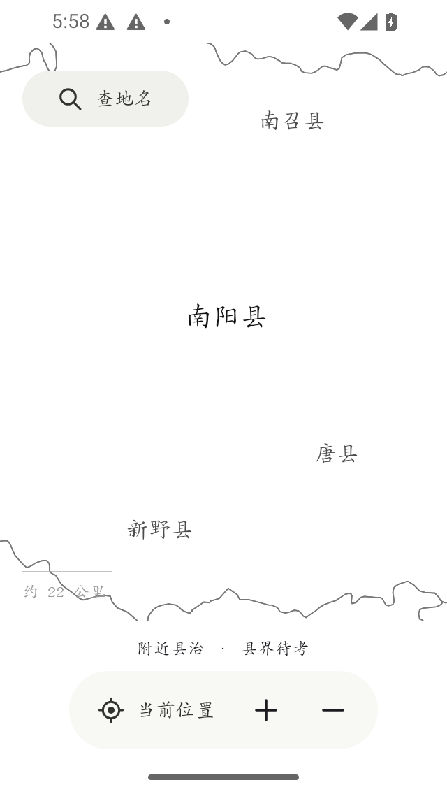
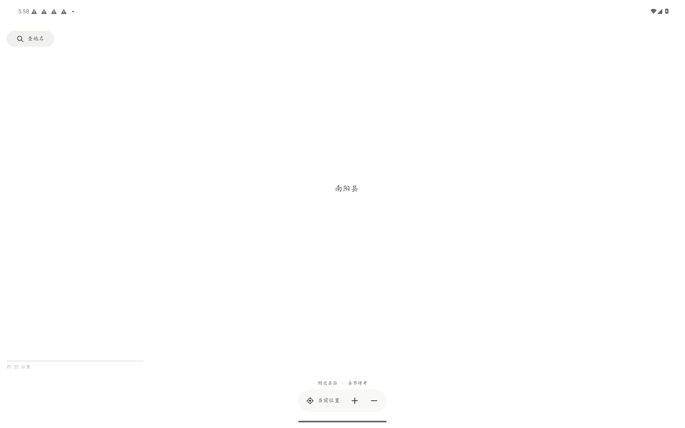
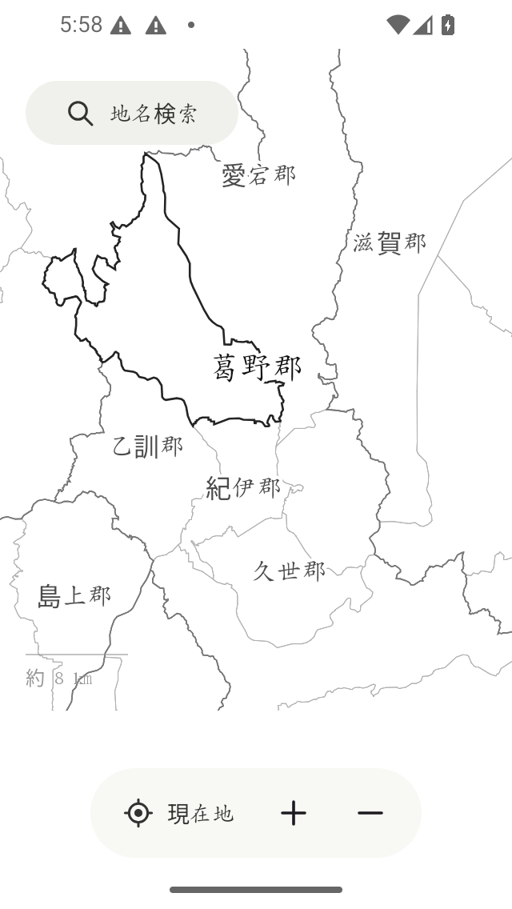
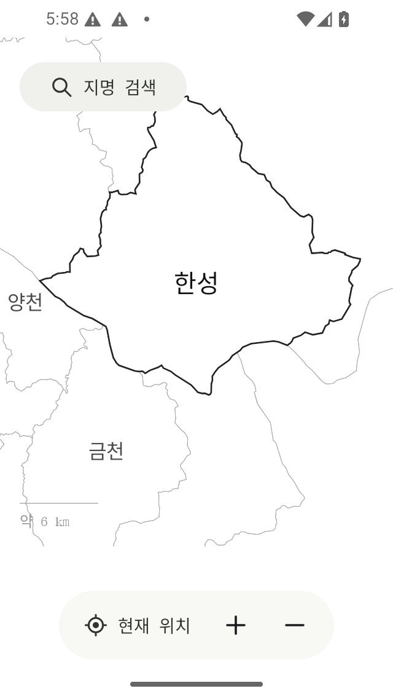
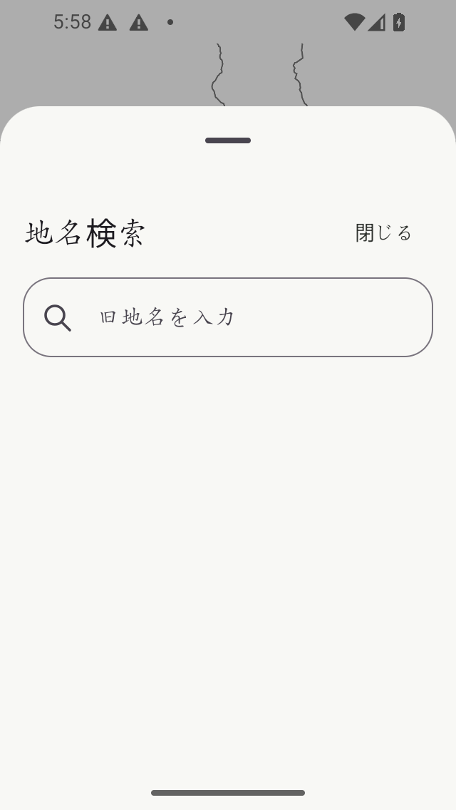
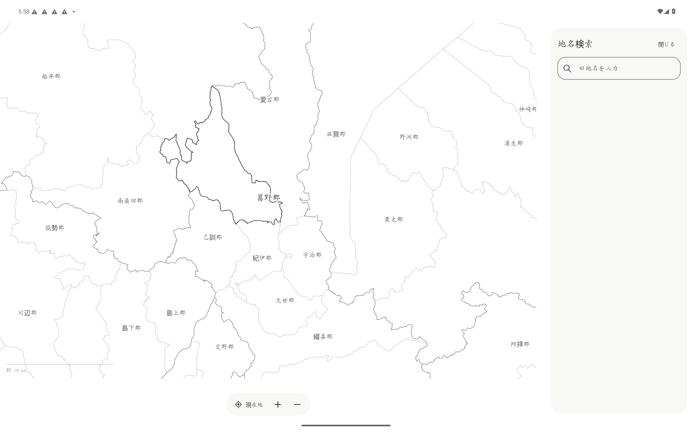

此刻你站的地方，历史上叫什么
01界面






02数据
| 来源 | 原始记录 | 本应用使用 |
|---|---|---|
| CHGIS 县级治所时序 | 10,522 | 1,434 |
| CHGIS 府级治所时序 | 5,226 | 255 |
| CHGIS 府级辖区时序 | 3,830 | 231 |
| 明代卫所驻地点 | 375 | 375 |
| 日本旧国／旧郡 | 85 国、806 郡 | 68 国、715 郡 |
| 朝鲜道级／府郡县级空间记录 | 1,013 | 9 道级、335 府郡县级 |